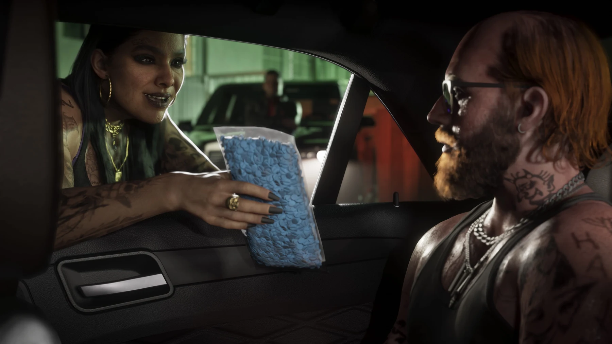

Qué significa la comparación
La guía recoge valores de Speed y ratings de carretera o campo a través. Esos datos ayudan a elegir un vehículo según el terreno, pero no son velocidad máxima medida. Su muestra incluye coches alquilables y de historia temprana, no toda la flota.
Vehículos destacados en esa muestra
El Bravado '19 Buffalo aparece con rating de carretera 706 y Speed 6,9. El Dinka Sugoi destaca en el circuito mixto descrito por la guía; la Maibatsu Sanchez tiene el mayor rating off-road de esa muestra. El Vapid '70 Ganado y el Declasse '72 Tulip son vehículos de historia, con información comparable incompleta.
| Vehículo | Uso señalado | Dato publicado | Límite |
|---|---|---|---|
| Bravado '19 Buffalo | Asfalto | Rating 706; Speed 6,9 | Alquiler; no se conserva, según guía |
| Dinka Sugoi | Rallycross | Rating carretera 654; off-road 667 | Ficha inicial |
| Maibatsu Sanchez | Campo a través | Rating off-road 715 | Muestra parcial |
| Vapid '70 Ganado | Coche de Jason | Rating carretera 492 tras restauración | No compara mejoras idénticas |
| Declasse '72 Tulip | Vehículo personal | Ficha aún no mostrada | Sin rating en fuente |

Elige por carrera y disponibilidad
Para asfalto, revisa rating de carretera y requisitos del evento; para tierra, compara off-road. Considera coste, acceso y si se puede conservar: la guía dice que el Buffalo de alquiler no se guarda. Repite la comparación en la misma versión y con modificaciones equivalentes antes de concluir que un modelo es más rápido.
En resumen
El ranking inicial es una instantánea de fichas, no una tabla de velocidades máximas. Úsalo para elegir según superficie y confirma los datos después de actualizaciones.
Preguntas frecuentes
¿Cuál es el coche más rápido?
No se deduce de estas fichas; Speed no equivale a velocidad máxima medida.
¿Cuál tiene mejor rating de asfalto en esta muestra?
GTA Vice Guides cita el Buffalo con 706.
¿Cuál destaca en tierra?
La guía destaca la Sanchez por rating off-road, pero la muestra es provisional.
Fuentes y lecturas
Consulta la fuente original cuando exista y su fecha; los anuncios, el catálogo y las guías de terceros pueden cambiar.